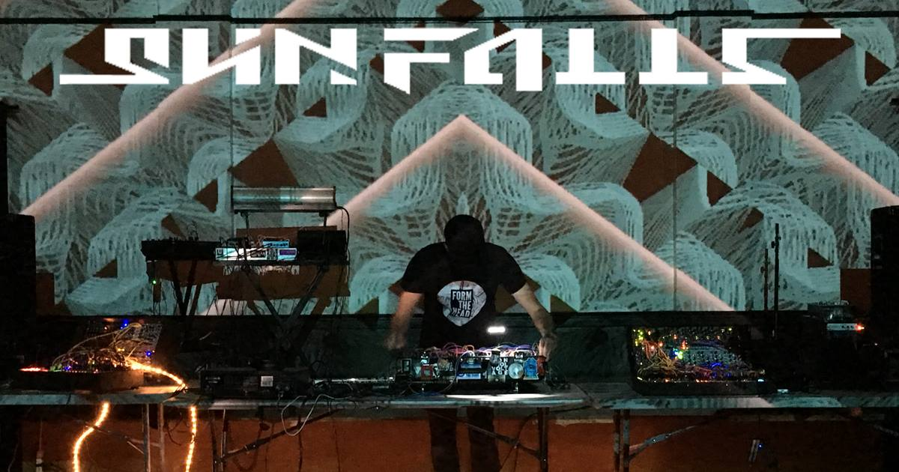

Hello, I'm Eusebie Siebenberg, an aspiring Software Developer who also performs live electronic music as SunFalls. I'm currently enrolled in the Full Stack Coding Bootcamp at Epicodus here in Portland, OR. After many years in sales, I decided it was time for a career change and decided to try my hand at coding, turns out I love it! Combined with my years of experience in programming, technical support, usage and build out of custom music software and hardware, learning to code is the perfect match!
Below is a list of my current projects in order from the very first one! Some of these are still a "work in progress", as we learn, so we code! Each one of these projects included using Git in our preferred command line interface to create and manage Github Repositories
For the past 7 years I worked for a small specialist electronic music instrument shop here in Portland, OR. Focused on: educating individuals and sometimes small groups on usage, implementation and build-out of unique instruments, as well as technical support for hardware and software.
I have worked in audio engineering, on stage and in the studio. Provided technical cue-based composition and live sound during rehearsals and performances using various software and hardware for local and touring theatre companies.
I want to enter the world of software development and work in an exciting field. Whether analog or electronic, software is paramount in the process of creating music. Combined with my experience in music, electronic instruments and the technical skills gained through the Epicodus bootcamp, I plan to eventually obtain a career programming for music software, web based music implementation, mobile apps, and real time applications for the arts.